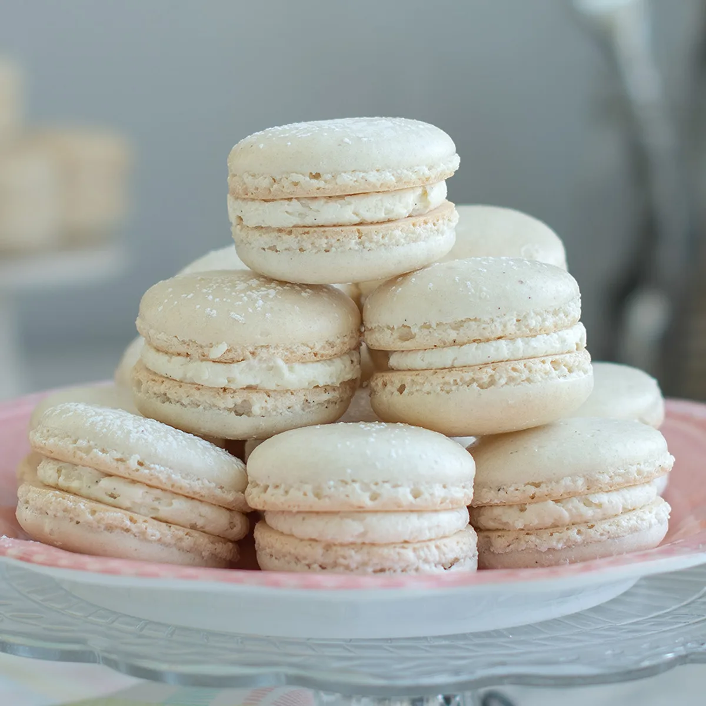

Vanilla Macarons

Description
Macarons are a nice, elegant dessert to have at an event or simply just after dinner.
Ingredients (Shells)
- 100g of Almond Flour
- 100g of Sugar
- Egg Whites
- Granulated Sugar
- Unsalted Butter
- Vanilla Extract
Steps
- Weight out almond flour and powered sugar.
- Whisk together almond flour and powdered sugar.
- Weight out sugar over egg whites in your mixer bowl.
- Whisk egg whites and sugar over a double boiler until sugar is fully dissolved.
- Beat egg whites and sugar for about three - four minutes until stiff peaks form.
- Sift dry ingredients (#1) over meringue
- Mix macaron batter by scraping the edge of the bowl with a rubber spatula and the folding it down the center.
- Mix just until the batter is runny enough to form a full figure 8 (please don't over mix.)
- Place macaron batter in a piping bag fit with a medium sized circle tip.
- Pipe even sized macarons on prepared baking sheet.
- Bang the pan on the counter a couple of times to release air bubbles.
- Rest just until the oven is done preheating and bake one pan at a time, on middle rack.